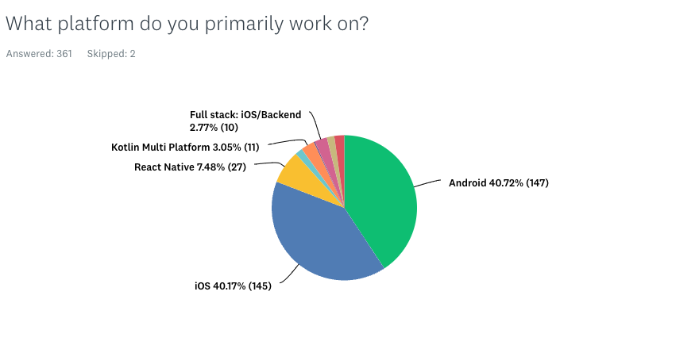

Thank you to everyone who filled out the 2023 edition of the MNF Mobile Ecosystem survey ; we are excited to share the results with you now!
This year we saw over 360+ responses across multiple continents and a diverse company size. An even distribution between Android and iOS engineers and a common interest on AI development from both platforms. In this analysis we'll cover demographics, work, and tech related areas. Additionally we'll dive into an analysis of Android and iOS.
There was a 40% response from Android engineers and 40% from iOS engineers. The extra 20% were other platforms like React native which was the majority of the development. We saw a 4% increase in Android engineers' responses from last year. iOS decreased 1% and other platforms remained roughly the same.

Android and iOS developers show high engagement with state-of-the-art technologies such as AI and the newest development languages for native development. This is coupled with a significant use of the primary IDEs.
The top levels that answered the survey were Eng II, Sr Software eng and Staff eng. With almost an even distribution of 2-5+ years. There was a trend of more engineers that answered were between 2-5 years working at their current company. The geographic analysis shows that most of the responders are from North America and Europe. This could influence the technological trends and remote work policies that are more prevalent in these regions due to their technological hubs and work culture.
The responses indicate that there's a strong preference for flexible working arrangements. With over 60% of the engineers working remotely. Pay based on location does get adjusted for almost 50% of the companies, we're seeing this trend across the world.
Even with these trends, most of the engineers have the ability to attend a dedicated space with a whopping 90% of companies providing a space for them to work from. The attendance does trend more towards remote and little to no days of attendance to the office. But there seems to be a 2 day attendance policy on some of the companies.
Office Space and Remote Work:About 29.25% of employees work fully remotely. YoY remote work remained the same over all categories with a slight increase on 2 days heading into the office.
Pay Localization:Adjusting pay is prevalent in both Android and iOS with 49.66% respondents saying their company adjusts based on location. We saw a 6% decrease in adjusted pay based on location so less companies are adjusting pay based on location.
Emerging Tech: Android developers show engagement with new technologies, particularly in AI, Snapshot testing, and server-driven UI. In iOS we see a similar trend with a higher inclination towards newer technologies such as SwiftUI. This suggests strong orientation towards modernizing application frameworks and incorporating advanced functionalities for both platforms.
In the year 2022 we saw that 38% of the people responding to the survey built their UI with Jetpack Compose.
In 2023 62% of the people responding to the survey are building their UI with Jetpack Compose.
There was a 24% growth for the new way of developing Android UI. XML over the course of the year decreased from 47% to 39%.
In the year 2022 we saw that 29% of the people responding to the survey built their UI with SwitftUI.
In 2023 54% of the people responding to the survey are building their UI with SwiftUI.
There was a 25% growth for the new way of developing iOS Apps.
There's an even distribution of how companies structure their code and how they work. 90% of the respondents chose between monorepo, several mega repos or multiple micro repos. No real trend towards how companies operate the distribution of their code and how they architect it.
A/B testing is primarily based on custom solutions, with many of the remaining respondents using Firebase.
Across the general data, there is a notable enthusiasm for AI and cross-platform solutions, suggesting that regardless of platform, there's a significant push towards embracing these technologies to stay competitive and innovative in the market .
Both platforms employ multiple strategies for testing with unit tests always being part of the list. Snapshot tests also grew from the last survey.
You can see all results at this link! Also, there are PDFs of these results, along with a slice for Android, and one for iOS.